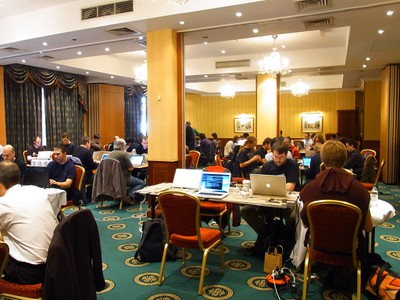

Sprints(スプリント)
PyCon JP Sprints

Sprintとは
Sprint は短期集中型のソフトウェア開発イベントです。今回は PyCon JP の翌日に同じ会場で開催します。Hack-a-thon や開発勉強会という呼ばれ方もすると思います。
参加資格
PyCon JP の Sprint は誰でも無料で参加できます。カンファレンスのチケットも必要ありません。
Sprint 会場には電源と無線LANやホワイトボードを用意する予定です。参加者のみなさんは自分の開発用ノートPCを持ってきてください。
Sprintの提案と登録
Sprint テーマの提案と参加登録は誰でもできます。
PyCon JP 2011 Sprint Spreadsheet で自分でテーマを書いてリーダーになることもできますし、他の人のテーマに参加することも可能です。 参加登録は必須ではありませんが、リーダーが何を準備するかとか考える助けになるので、事前登録をおすすめします。
Sprintの一覧
(随時更新)
| Kay-framework | MiCHiLU |
| haml-jinja | MiCHiLU |
| pypy-ja | rokujyouhitoma, Surgo, Masahito, shomah4a, jbking |
| blockdiag hacks | tk0miya |
| pyramid | aodag, imagawa_yakata, Shinya Ota, jptomo |
| SlapOS | Tahara Yusei |
| distutils2/packaging | Takayuki SHIMIZUKAWA, hychen, aroma_black |
| App Engine Code Lab | Takashi Matsuo |
| Python-RDMA | Danna |
| Python Design Doc for sphinx | Yuta Kitagami, aodag, tk0miya |
| DevQuiz | ytakeuch |
FAQ
飲食について
- Q: 昼食は出ますか?
- A: 出ません。チームごとなどで外に食べに行くことをおすすめします。 (PyCon JP Sprints: Lunch Map)
- Q: Sprints 会場で飲食はできますか?
- A: 飲み物は可能ですが、食事は不可です。スイーツ食べながら開発できなくてすいません。
参加について
- Q: Tarek は来ますか?
- A: 残念ながら Tarek は観光に出かけるため Sprints には参加しません。
- Q: PyCon JP 2011に参加していませんが Sprints に参加してもいいんですか?
- A: 問題ありません。
- Q: 誰が参加しますか?
- A: 事前登録が必須ではないので参加者を把握することはできませんが、 PyCon JP 2011 Sprint Spreadsheet や Facebook の イベントページ でなんとなく誰が参加するかを知ることができます。
- Q: 途中入場、退場は可能ですか?
- A: 可能です。特に受付などを設ける予定はありません。
やることについて
- Q: なにをすればいいんですか?
- A: とくに決まりはありません。自分の開発をすすめるもよし、他の人のチームに参加するもよし、いろんな人に茶々を入れて仲良くなるもよしです。
- Q: Sprint リーダーになるのに資格は必要ですか?
- A: なにもありません。一緒に Sprint をやる人を募るためにも、ぜひリーダーになってください!!
 ニュース
ニュース